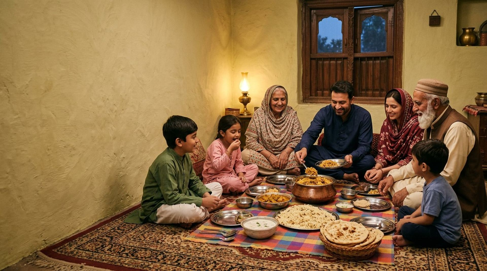

Integrity in every conversation
Trust begins before an order is placed. We value accurate product information, transparent discussions and clear agreements on specifications, packaging and order requirements.

Leadership
Focused on the future.
Since 1975, Saith Hanif Rice Mills has been rooted in Jhabran, Sheikhupura, Punjab, Pakistan. Our story connects a long-standing milling heritage with a practical approach to rice products, customer requirements and business relationships.
Leadership
Every lasting business begins with a vision. At Saith Hanif Rice Mills, our story began in 1975 with a commitment to the rice trade in Jhabran, Sheikhupura, Punjab, Pakistan.
Today, our identity is represented by our milling heritage, our product brands — Ziyarat, Sultan and Wazir — and our commitment to building meaningful relationships with customers and business partners.
We believe successful trade begins with understanding. Understanding the product, the buyer’s requirements, the importance of clear specifications and the responsibility that comes with every business relationship.
Our leadership philosophy is straightforward: respect the grain, value the customer and approach every opportunity with professionalism.
From our mill in Pakistan, we welcome conversations with buyers who value clarity, commitment and long-term business relationships.

The founder’s legacy

Saith Hanif — Founder
Every business has a beginning. Ours began with Saith Hanif, who established Saith Hanif Rice Mills in 1975.
His name remains at the heart of our business identity, connecting our present-day operations with the heritage of the mill in Jhabran, Sheikhupura.
For us, heritage is more than a date. It is a responsibility to carry the business forward with care, to respect the work behind every bag of rice and to build relationships that have a reason to last.
As the rice industry evolves and buyers’ requirements change, we believe the principles of good business remain important: clear communication, an understanding of the product and a shared commitment to meeting agreed requirements.
Our heritage gives us our foundation. Our responsibility is to build on it.
Our leadership philosophy
We believe the strongest business relationships are created when both sides understand what is being supplied, what is expected and what has been agreed. Our approach to leadership is guided by four principles.
Trust begins before an order is placed. We value accurate product information, transparent discussions and clear agreements on specifications, packaging and order requirements.
Rice is not simply a commodity in a bag. Variety, processing, grain characteristics, sorting and packaging all matter. We encourage buyers to discuss their precise requirements so that the appropriate product can be identified.
Every buyer serves a different market. Importers, distributors, wholesalers and private-label businesses may have different expectations. We welcome those conversations and aim to make product enquiries straightforward and productive.
We believe meaningful business relationships are built through consistent communication, realistic expectations and respect for agreed commitments. Our goal is to approach each suitable opportunity with that perspective.
Our brands. Our responsibility.
Our product portfolio brings together three brands, each with its own selection of rice products.

A diverse rice portfolio
From selected 1121 varieties to steam, sella, basmati, short-grain and other rice products, Ziyarat represents a broad selection within our portfolio.
Explore Ziyarat
A focused selection
Featuring Kainat Basmati Sella and Short-Grain Rice, Sultan offers buyers additional options within our branded range.
Explore Sultan
Selected rice varieties
Featuring Kainat Basmati Sella and Steam 1121 Rice, Wazir extends our portfolio of branded rice products.
Explore WazirThe right business relationship begins with the right product conversation.
Our approach is to help buyers identify the products that best correspond to their requirements, with specifications and packaging confirmed for the relevant order.
A partnering approach for international buyers
Choosing a rice supplier involves more than comparing product names. Buyers need to understand the variety, processing type, packaging, order quantity and destination requirements before making a purchasing decision.
At Saith Hanif Rice Mills, we welcome enquiries from businesses looking to source rice products from Pakistan.
Whether you are a rice importer, wholesaler, distributor or business exploring private-label packing, we encourage you to share your requirements with us.
Our discussions can cover:
We believe that clear expectations from the beginning help buyers make better-informed decisions and help both parties establish a sound basis for business.
Tell us what your market needs. Let’s discuss how our mill may serve those requirements.


Looking ahead
Since 1975, our business has been rooted in Jhabran, Sheikhupura, in Pakistan’s agricultural landscape.
Looking ahead, we aim to strengthen the way we present our products, communicate with buyers and develop opportunities for Ziyarat, Sultan and Wazir.
We recognize that international trade requires careful attention to product specifications, packaging requirements, destination-market expectations and the details of each order.
Our direction is clear: continue building on our milling heritage, remain attentive to customer requirements and pursue suitable business relationships with professionalism.
We see every serious enquiry as an opportunity to understand a buyer’s needs and explore whether there is a sound basis for working together.
Let’s start a conversation
Whether you are sourcing rice for wholesale distribution, import, retail or a private-label project, we invite you to contact Saith Hanif Rice Mills.
Tell us about the variety you need, your preferred packaging, estimated quantity and destination market. Our team can discuss the relevant product details and potential supply arrangements with you.
Saith Hanif Rice Mills
Jandiala Road, JhabranSaith Hanif Rice Mills — From our mill in Pakistan, to tables around the world.
We believe good business begins with trust, grows through understanding and is strengthened by keeping commitments.
At Saith Hanif Rice Mills, we welcome the opportunity to learn about your requirements, discuss our rice products and explore a business relationship built on clear expectations and mutual respect.